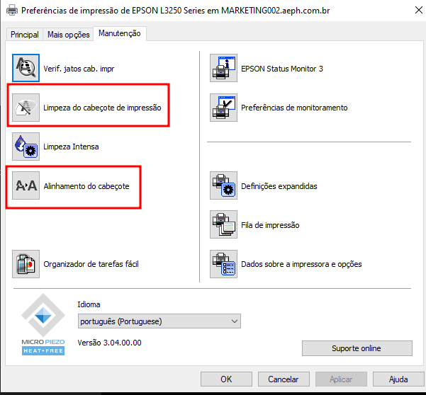

Este projeto visa auxiliar o analista nas atividades relacionadas aos atendimentos de chamados direcionados para o T.I da AEPH do Brasil.
Caso a impressão esteja com muitas falhas, vá em fila de impressão e procure por Preferências de Impressão: Manutenção e rode Alinhamento do Cabeçote (uma ou duas vezes), Limpeza do Cabeçote de Impressão (duas vezes ou mais, sem imprimir a página de testes entre os procedimentos), com cada passo finalizado, rode a impressão da página de testes e verifique a qualidade. Caso ainda apresente problemas, repita o processo de Limpeza.
